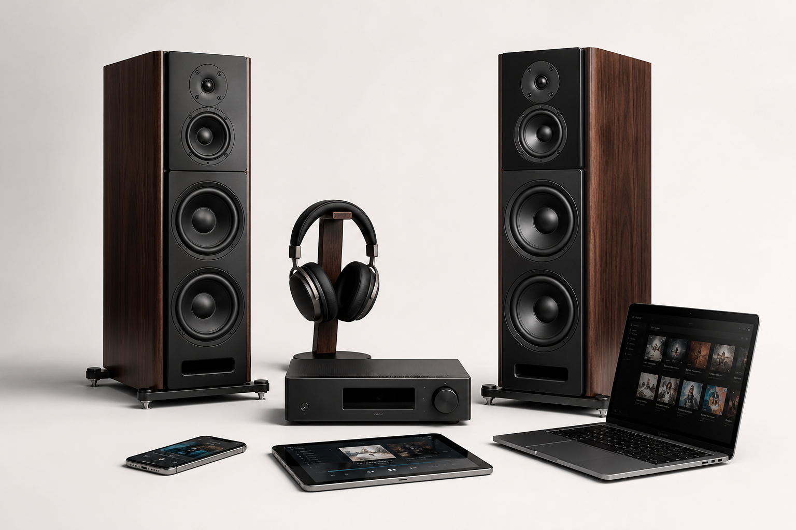

존과 엔드포인트.
USB DAC, WASAPI / ASIO Exclusive, 네트워크 Output 앱. 여러 기기를 하나의 존으로 묶어 동시에 재생하거나, 기기마다 다른 곡을 보낼 수 있습니다. Control은 소리를 내지 않습니다.
담장을 허뭅니다. 소리가 나는 곳이 곧 출력입니다.

USB DAC, WASAPI / ASIO Exclusive, 네트워크 Output 앱. 여러 기기를 하나의 존으로 묶어 동시에 재생하거나, 기기마다 다른 곡을 보낼 수 있습니다. Control은 소리를 내지 않습니다.
WASAPI Exclusive와 ASIO. Bit-perfect가 가능할 때 경로에 배지를 붙입니다. Output.exe가 DAC를 붙잡습니다.
싱글 플레이어의 다중 기기. Sync로 전원 동시 재생, Independent로 방마다 다른 큐. 라운지의 멀티유저와는 별개입니다.
PCM과 DSD(DSF/DFF). 룸이 포맷을 고정하면 지원하지 않는 클라이언트는 청각 제외(Control만 참관)할 수 있습니다.